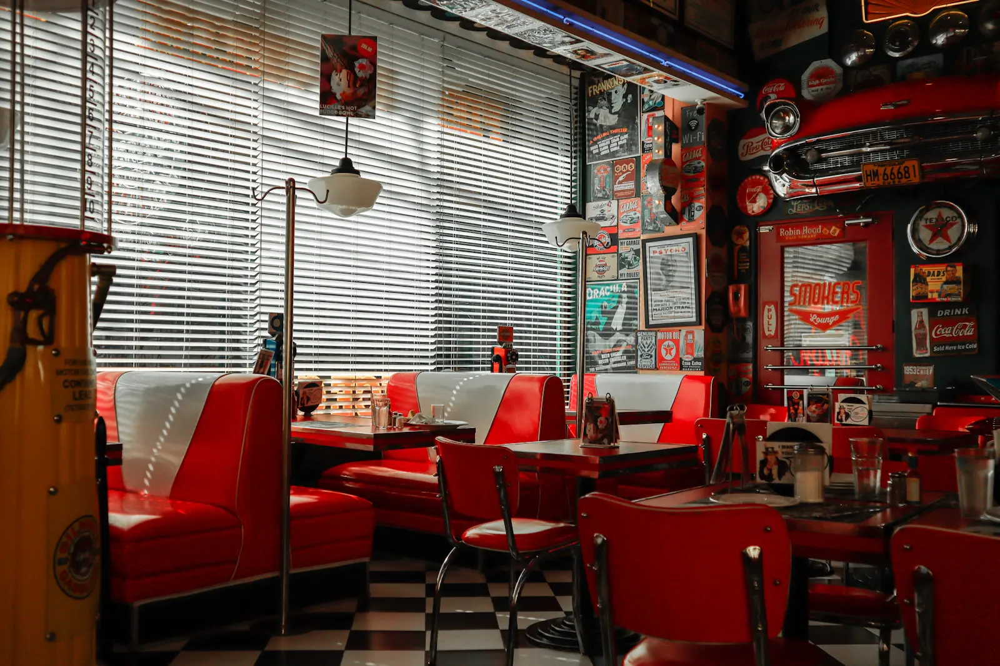

A place to
come back to.
In our little fictional corner of Bean Station, June starts the coffee before the sun gets over the ridge. Cal claims the corner booth. Somebody’s always asking what’s in the oven.
That’s the café we imagined: familiar recipes, plates worth passing, and time for one more cup. Nothing fancy. Plenty to love.
June & Cal
The fictional folks behind Clover Bend

This is not an actual Clover Bend location.